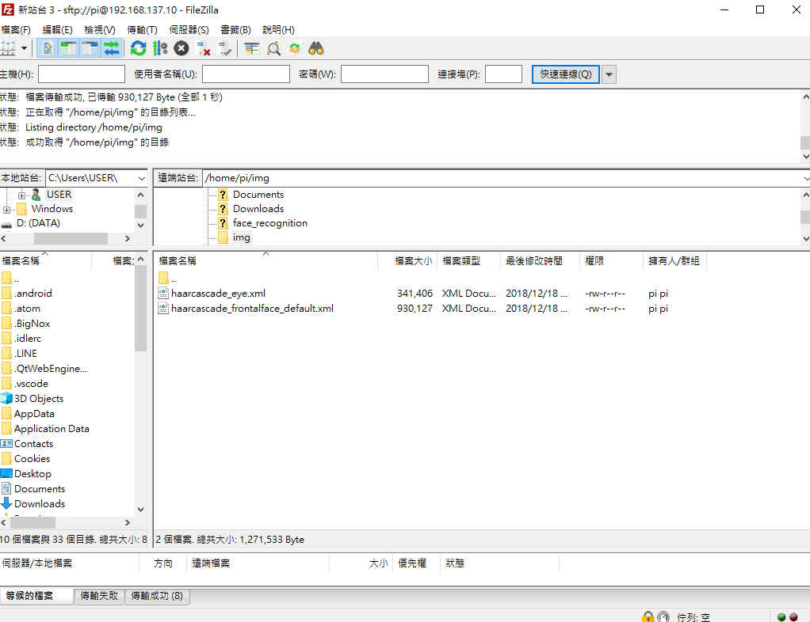

網路攝影機 : 簡易智慧監控+人臉偵測
使用設備 :
1.Raspberry樹莓派
2.羅技網路攝影機PCM-515
網路攝影機簡介 :
專為Win XP/VISTA/7所設計
採用高級五層玻璃鏡頭
即插即用，不需安裝驅動程式
內建高感度麥克風收音
可調式高亮度 LED燈
應用 :
1.醫療保健 :
大多數現代網路攝錄影機能夠通過使用簡單的演算法技巧捕足動脈脈搏率 研究人員聲稱這種方法準確到±5bpm
2.影片監控 :
網路攝影機被安裝在託兒所、辦公室、商店、公路等地以監控安全和員工活動
3.視訊會議 :
用來在兩個或多個地點的多個用戶之間提供語音和運動彩色畫面的雙向實時傳送的視聽對談型會議業務。大型影片會議系統在軍事、政府、商貿、醫療等部門有廣泛的應用
4.影片通話 :
網路攝影機可以進行即時通訊 , 網路電話 等服務，全球已有數以百萬的用戶進行過一對一的即時影片通訊。這種新的通訊形式有許多新功能,如自動照明控制、實時濾鏡（潤色）、自動對焦等功能,提供了用戶更多的易用性,這進一步加速了網路攝影機的普及
5.遊戲控制裝置 :
特殊軟體可以使用網路網路攝影機的影片流來協助或增強用戶對應用和遊戲的控制。可以觀察和跟蹤影片功能，包括臉部，形狀，模型和顏色，以產生相應的控制形式。例如，可以跟蹤單個光源的位置並用於類比滑鼠指標，頭戴式燈將實現免提計算，並將大大提高電腦可存取性。這可以應用於遊戲，提供額外的控制，改進的互動性和沉浸感。
步驟1>攝影機連接樹莓派
攝影機連接樹莓派，在樹莓派輸入指令"sudo apt-get install fswebcam,安裝fswebcam工具，以便往後的執行

步驟2>下載分類器
樹莓派下新建一個資料夾取名為img,下載haarcascade_eye.xml及haarcascade_frontalface_default.xml,放進img資料夾內步驟3>撰寫程式碼
寫完程式後放在img目錄下並執行，即可看到結果，只有人臉辨識到的圖片，會儲存在img目錄下，程式碼如下:import numpy as np
import cv2
import time
face_cascade = cv2.CascadeClassifier('haarcascade_frontalface_default.xml')
eye_cascade = cv2.CascadeClassifier('haarcascade_eye.xml')
cap = cv2.VideoCapture(0)
while 1:
ret, img = cap.read()
gray = cv2.cvtColor(img, cv2.COLOR_BGR2GRAY)
faces = face_cascade.detectMultiScale(gray, 1.3, 5)
for (x,y,w,h) in faces:
cv2.rectangle(img,(x,y),(x+w,y+h),(255,0,0),2)
roi_gray = gray[y:y+h, x:x+w]
roi_color = img[y:y+h, x:x+w]
cv2.imwrite(str(time.strftime('%Y-%m-%d %H:%M:%S',time.localtime(time.time()))) + '.jpg', img)
eyes = eye_cascade.detectMultiScale(roi_gray)
for (ex,ey,ew,eh) in eyes:
cv2.rectangle(roi_color,(ex,ey),(ex+ew,ey+eh),(0,255,0),2)
cv2.imwrite(str(time.strftime('%Y-%m-%d %H:%M:%S',time.localtime(time.time()))) + '.jpg', img)
cv2.imshow('img',img)
k = cv2.waitKey(30) & 0xff
if k == 27:
break
cap.release()
cv2.destroyAllWindows()
測試成果
將網路攝影機對著要監視的地方，最常用於自家門口的監控，例如:把它固定在家門前的上方，鏡頭朝下，讓鏡頭的範圍只有在家門前的那一小區塊，除了有人要來拜訪之外，基本上大部分的時間畫面都是相對靜止的，只有在畫面中偵測到的物體有很大的變動時，攝影機就會自動把有變動較大的畫面存成圖檔保存到指定的路徑，顯示年月份還有幾時幾分幾秒，這樣打開檔案就可以知道甚麼時候有人來過